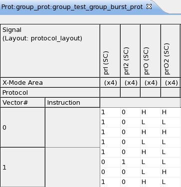

Using pin role groups for parallel protocols
You can considerably simplify the definition of a parallel protocol by combining the pin roles of such a protocol into a pin role group. This construct allows you to define the frame data of these pin roles on the group level with one single entry. Due to this, the relationships between parameters and fields of a pin role group can be coded very compactly. Another advantage of pin role groups is that they improve the performance.
The field length of a pin role group must be set in the frame definition to
field_length = protocol_width * field_length_per_pin,
where protocol_width is the number of pin roles that belong to the group, and field_length_per_pin the length of the fields for the individual pins, which must be equal for all pins.
The assignment of the content of a group field to the individual pins is definable by the user with the (mandatory) sliceDepth attribute of the pin role group. The maximum slice depth is field_length_per_pin, the minimum is 1. In the latter case, the ith pin role in the order of the pin role group definition is associated with bits protocol_width * n + i for all n ≥ 0 such that protocol_width * n + i ≤ field_length. Thus if protocol_width = 2, then bits 1, 3, ... will be associated with the first pin role, and 2, 4, ... with the second pin role.
Example
The following protocol fragment contains all information that is necessary to understand the example.
. . . <pinRoleGroup name='IN_GR' sliceDepth='1'> <pinRoleRef name='IN1'/> <pinRoleRef name='IN2'/> </pinRoleGroup> <pinRoleGroup name='OUT_GR' sliceDepth='4'> <pinRoleRef name='OUT1'/> <pinRoleRef name='OUT2'/> </pinRoleGroup> <frame name='group_trans' > <para name='input' direction='IN' length='16' displayNumbers='HEX'> <decode function=''/> </para> <para name='output' direction='OUT' length='16' displayNumbers='HEX'> <decode function='@OUT_GR.@out_field'/> </para> <pinRoleData pinRoleRef='IN_GR'> <field name='in_field' length='16' direction='DEFAULT'> <encode function='input'/> </field> </pinRoleData> <pinRoleData pinRoleRef='OUT_GR'> <field name='out_field' length='16' direction='DEFAULT'> <encode function='output'/> </field> </pinRoleData> </frame> . . .
There
are two pin role groups, IN_GR and OUT_GR. Group
IN_GR, which comprises pin roles IN1 and
IN2, has slice depth 1, group OUT_GR, which contains pin roles
OUT1 and OUT2, has slice depth 4.
The pin roles of this protocol are assigned to device pins as follows:
<protocolMapping protocol='group_prot' resource='prot' > <pinRoleMapping pin='prI' pinRole='IN1' /> <pinRoleMapping pin='prO' pinRole='OUT1' /> <pinRoleMapping pin='prI2' pinRole='IN2' /> <pinRoleMapping pin='prO2' pinRole='OUT2' /> </protocolMapping>
The test method is very simple, too:
virtual void run()
{
SYNCHRONIZED_TEST test("prot");
test.transaction("group_trans").set("input", "0b1010101010010010").
expect("output", "0b1010101010010010");
test.flush();
FUNCTIONAL_TEST();
return;Note that the parameter values specified in the test method are identical for both groups. In this way it should be easier to verify the effects of the different slice depths.
These effects can be checked by displaying the resulting protocol pattern with the state character layout in the Pattern Debug Tool:

Note the following points
- The pattern is in X4-mode. This is defined by the state mapping in the wavetable.
- The binary string that is specified as the parameter value in the test method is automatically converted into a state character sequence. In the case of an input parameter, the state characters "0" and "1" are used, for an output parameter, the characters "L" and "H".
Functional changes
- Introduced in SmarTest 7.1.0